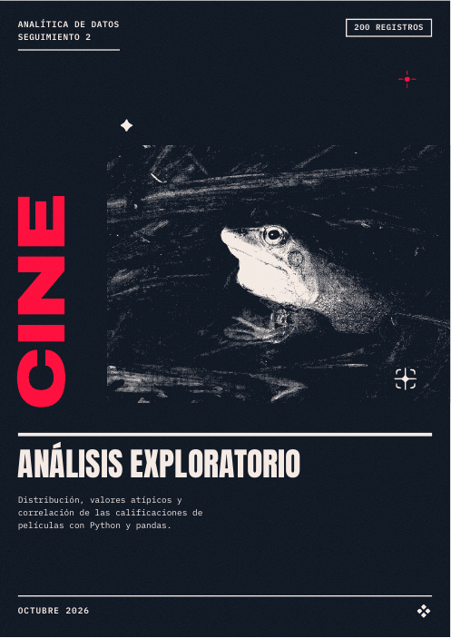
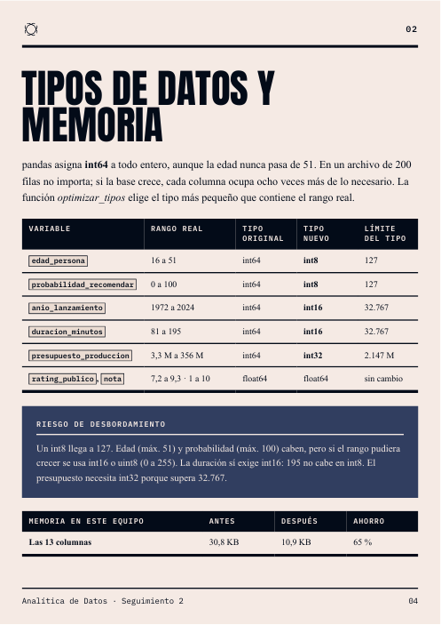
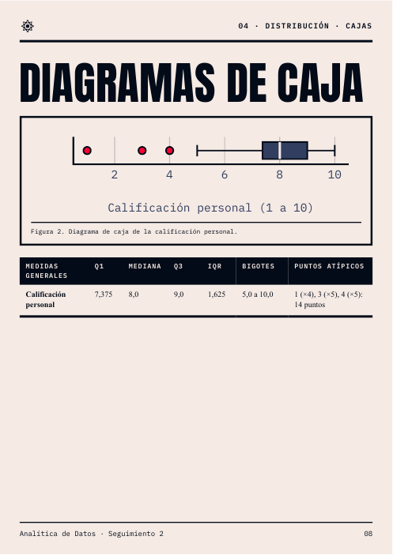

API de documentos para agentes
myStyle
Tu agente manda datos.Tú recibes el documento.
Ejemplos reales
PDF · PPTXWord · ExcelVideo · Web
Formatos
Un contenido.Seis salidas.
Estadísticas
94 % menostokens.
BrutalismoAnálisis de datos15 páginas
Análisis exploratorio: prueba de paridad con la referencia Seguimiento 2



Tu agente
Claude CodeCodexOpenCodeAntigravity
/brag
Haz trabajar a Haikucomo si fuera Opus.
Build once.Connect any AI.
RecetasEstilosVideoWeb